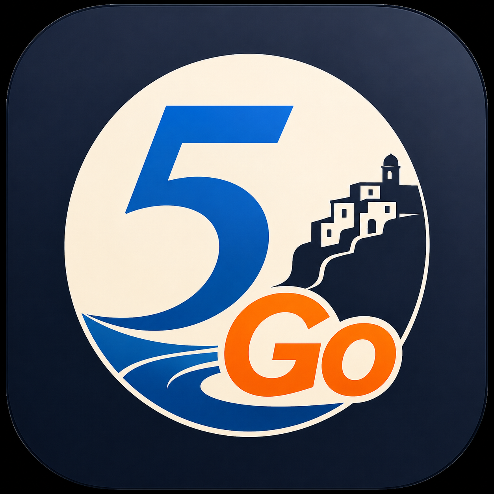

Interactive map of Cinque Terre and the Gulf of Poets
1%
Loading map
Preparing experience…
⌕

All
Beaches
Food
Viewpoints
Churches
Monuments
Stations
Bus stops
Ferries
Curiosities
Trails
Upcoming events
Riomaggiore upcoming events
See what is happening next in the village
Next events
Tour active
Next stop
Move toward the next stop.
▲
Follow the path
The stop description will appear here.
▶ Audio
Next stop
Vai
WhatsApp
Modifica
Related articles
Generate discount
×
⚡ GOD MODE
Nuovo punto sulla mappa
Tipologia
POI classico
Chiesa
Monumento
Sentiero
Spiaggia
Stazione
Fermata traghetto
Ristorante
Bar
Punto panoramico
Curiosità
Castello
Fontana
Bagno pubblico
Parcheggio
Farmacia
Ascensore pubblico
Fermata bus
ATM
Piazza
Titolo
Testo
Importanza
50
Foto
📷 Scatta foto
Scegli foto
Numero di telefono
Email
Annulla
Salva
Prossimi passaggi
Tocca per aprire o chiudere tutte le indicazioni
⌖
Modalità Vai
Destinazione
×
⌖ Usa GPS
Calcolo delle opzioni disponibili…
Avvia percorso
Termina navigazione
×
⌖
N
Your discount QR
Show this QR code to the restaurant.
×
Preparing discount...
×
Difficulty
—
Distance
—
Estimated time
—
Recommended shoes
—
Access
—
Elevation gain / loss
—
Average uphill slope
—
Maximum uphill slope
—
Elevation profile
Check the official trail status before leaving ↗